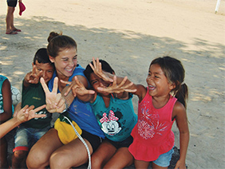
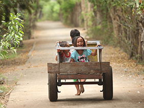
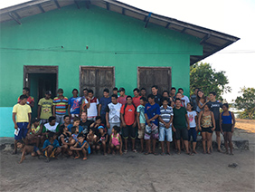

¿QUIÉNES SOMOS?
Fernando López, es un Jesuita que lleva trabajando en la Amazonia con comunidades indígenas y riberiñas desde hace muchos años, la familia formada por Gloria Acasuso y Juan de Dios Hermosín le conocieron en 1990 en Paraguay, donde él trabajaba en el mundo campesino y Juan de Dios estuvo como voluntario en la provincia Jesuita del Paraguay.
En 2015 Fernando compartió unos de los proyectos en los que estaba trabajando años atrás, la ayuda a la demarcación de tierras de “indios aislados”, y las necesidades que tenían los equipos que trabajan en este proyecto de disponer de equipos de geo posicionamiento y otros materiales tecnológicos para ayudar a la creación de los expedientes que se usan en el proceso legal de demarcación.
En base a las características técnicas del proyecto y las necesidades de recursos económicos, Gloria y Juan de Dios decidieron desarrollar y financiar el proyecto. Este proyecto fue el inicio de todo.




El mensaje de que vivimos en una “casa común” que debemos cuidar y proteger todos. Llevar a cabo esta tarea junto a los más desfavorecidos y empobrecidos de la tierra es nuestra razón de ser.
Un lugar en el mundo donde concretar este trabajo es la Amazonia, pero somos conscientes que hay otros muchos lugares donde la situación es crítica.
Resumen de Laudato SíSínodo para la Amazonía